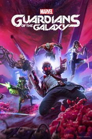

Marvels Guardians of the Galaxy
Detalles
|  | |
| Tiempo de juego | No Jugado |
| Última actividad | Nunca |
| Añadido | 11/6/2024 14:41:31 |
| Modificado | 11/8/2024 17:34:19 |
| Estado de finalización | No Jugado |
| Librería | Playnite |
| Fuente | 6TB STORE |
| Plataforma | PC (Windows) |
| Fecha de lanzamiento | 10/26/2021 |
| Puntuación de la Comunidad | 92 |
| Puntuación de la Crítica | |
| Puntuación de usuario | |
| Género | Acción Aventura |
| Desarrollador | Eidos-Montréal |
| Editor | Eidos Interactive Corp. |
| Característica | Cloud Saves Compat. Total Con Mando Logros De Préstamo Familiar Un Jugador |
| Enlaces | Punto de encuentro Discusiones Guías Noticias Página de la tienda PCGamingWiki Logros |
| Tag | Acción Acción y aventura Ambientales Aventura Buena trama Ciencia ficción Cinematográficos Comedia Disparos Disparos en tercera persona Espacio Exploración Extraterrestres Gran banda sonora Las elecciones importan Multijugador Mundo abierto Rol Superhéroes Un jugador |
Descripción

Dale caña y surca el cosmos con una nueva versión de Marvel's Guardians of the Galaxy. En esta aventura de acción en tercera persona encarnas a Star-Lord, un cuestionable líder muy echado para adelante que ha conseguido convencer a un estrafalario grupo de insólitos héroes para que se unan a él. Un notas (que no eres tú, clarísimamente) ha desencadenado una serie de catastróficos eventos, y solo tú puedes mantener unidos a los impredecibles Guardianes el tiempo suficiente para evitar el colapso interplanetario. Desenfunda los blásters elementales, propina palizas en equipo o da patadas voladoras con las botas propulsoras; aquí todo está permitido.
Y si crees que el plan está saliendo a pedir de boca, te vas a llevar una buena sorpresa, porque las consecuencias de tus actos no dejarán que los Guardianes se duerman en los laureles. En esta historia original de Marvel's Guardians of the Galaxy te encontrarás con poderosos seres nuevos y versiones únicas de personajes emblemáticos, que se verán envueltos en una lucha por el destino de la galaxia. Ha llegado el momento de enseñarle al universo cómo te las gastas.
¡Tú puedes! Supongo...
PONTE AL MANDO DE LOS GUARDIANES DE LA GALAXIA

Juegas como Star-Lord, así que puedes luchar como mejor te venga en gana. Desenfunda los blásters elementales, da patadas aéreas con las botas propulsoras o propina palizas en equipo. Aquí quien dirige el cotarro eres tú, y con los Guardianes luchando a tu lado, podrás ejecutar increíbles ataques propios para que tus enemigos vean las estrellas. Además, a medida que la historia se vaya desarrollando, podrás comprobar que las consecuencias de tus decisiones pasarán de lo más cachondo a lo más inesperado.
UNA NUEVA HISTORIA

Tu recién formado grupo de legendarios proscritos deberá salvar el universo en esta nueva pero fiel versión de los Guardianes de la Galaxia. Sin querer, desencadenas una serie de catastróficos eventos y te verás en la obligación de surcar alucinantes mundos habitados por personajes emblemáticos y nuevos de Marvel. Pon a todo trapo la cinta de éxitos ochenteros y prepárate para darlo todo.